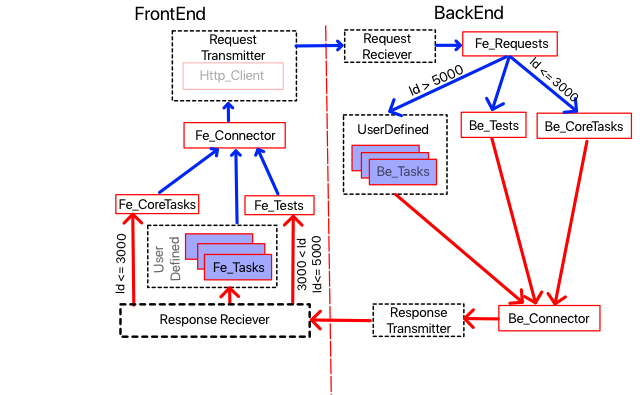

Copyright (c) Prolog
Developemnt Center SPb
Exchange of information
between BackEnd and FrontEnd
Domain EDF_D as the basis
for the exchange of information
The main domain used in BackEnd and FrontEnd close to the data transfer
boundary is the EDF_D (Exchange Data Format) domain .
Domain definition and
domain term operations are defined in the EDF package ( SpbVipTools\Packs\Logic\edf ).
The EDF_D domain is essentially a
combination of the VIP value , namedValue and namedValueList domains , and the
term names are reduced to
the minimum acceptable in order to save text size and is represented by
the specification
domains
edf_D =
n;
av(string,edf_D); <- analogue namedValue (attribute-value)
bl(boolean LogicBoolean);
u(unsigned Value);
u64(unsigned64 Value);
i(integer Value);
i64(integer64 Value);
r(real Number);
c(char Value);
s(string Value);
s8(string8 Value);
b(binary Value);
bNA(binaryNonAtomic Value);
tg(gmtTimeValue Value);
tl(localTimeValue Value);
o(object VipObject);
a(edf_D* Values); <- list of terms (array)
rf(edf_D Reference);
err(integer ErrorCode,string ErrorText).
The EDF package contains
operations for converting terms from the domain EDF_D to terms in the value domain, namedValue and vice versa (for
possible matches).
The case of a mono
application (BackEnd and FrontEnd in the same application project)
In this case, for BackEnd and FrontEnd, the native format is EDF_D and they exchange data in
this format.
The case of exchange via
http protocol (BackEnd and FrontEnd in different application projects)
When exchanging over http protocol, the basic format
is JSON, but the features of data transfer are determined by the
details of the architecture.
The message form in Json
format looks in the string representation as
{
"id": <message identifier>,
"jsonrpc": "2.0",
"method": <method>,
"params": {
"transID": <transaction identifier>
"eventID": <operation identifier>,
"dataformat": <format name>, <- data transfer
format - either EDF_D (value "edf") or JSON (value "json"),
"evParams" : <operation parameters>
}
}
"dataformat" and "evParams" are key parameters here.
It is accepted that BackEnd uses EDF_D as the working format, and FrontEnd can use either the EDF_D format or the JSON format (for example, if FrontEnd is a web browser-based client).
Since
the data exchange initiative in the RPC concept belongs to the client,
the client indicates the data transfer format convenient for him when
transmitting data.
If it is "edf", then the client (FE) uses EDF_D as the working one, and
when transmitting to the server (BE) it converts the working term into
a string representation with the toString (<EDF_data>) operation
and passes evParams like a
string. The server (BE), having received such a message, converts the
string representation into the term EDF_D with the simple operation
toTerm (<string EDF term>) and then uses this term as prescribed
by the operation.
If this is "JSON", then the client passes the parameters of the evParams
operation as a JSON object {...}. The server (BE) in this case, having
received the data in JSON format, converts them into the domain term
EDF_D.
The EDF package contains forward and reverses conversion operations between the EDF_D and JSON formats.
The
result of the operation is always returned in the format specified by
the client, while the message structure corresponds to the above.
The data format in which
the FE transmits is stored as the exchangeDataFormat_P property in the class object common\appFrontEnd\frontend
facts
...
exchangeDataFormat_P : string : = "json" . % Alternative is "edf"
and is accessible
through frontEnd.i
The movement of FE requests
and BE responses
The general scheme for
exchanging requests and responses is shown in the following figure.

FrontEnd objects access the BackEnd by calling the predicate of
the fe_Connector class :
request( <method> , <operation
identifier>, <operation
parameters> )
As you can see, neither the
data transmission format nor the communication method between FE and BE
are indicated here.
The identifier (code) of
the operation is an integer. Both FE and BE must know
what this code means, that is, what operation should be performed. Kernel mechanism Both FE
and BE use the SpbVipTools\Packs\Logic\appFrameSupport\coreIdentifiers.i file
connected to each of them .
It is accepted that in custom programs,
the file Common\dataExchangeIdentifiers.i
should also be used for
testing . In this case, the ranges of
values of operation codes are used:
- for core operations 0-3000
- for test operations
3001-5000
- for user operations>
5000
Operation parameters here
are transmitted in terms of the EDF_D domain , as described above.
Each message in the
request-response mechanism is considered as one transaction, which can
consist of either one request and the corresponding response, or one
request and many server responses. For each request, the
client creates a transaction identifier (integer). With a multiple server
response (per request), all responses must have the same transaction ID
as the first request.
Messages from the Fe_Connector through
the transmit-receive system with the addition of the transaction
identifier fall into the Fe_Requests class , which calls the fe_Request predicate
of one of the modules ( Be_CoreTasks or Be_Tests or
a custom module (designated as Be_Tasks )).
The request is processed
with the necessary modules, and then the response is called by
the predicate of the Be_Connector
response( <response
identifier>, <operation
parameters> , <transaction
identifier> )
It is transmitted to the
data transport mechanism with the same transaction identifier and
reaches the client (FrontEnd).
There, depending on the
code (identifier) of the response, the response data falls into the
corresponding processing module.
Types of Queries
FrontEnd can call BackEnd with three kinds
of queries:
- methodDo
- methodRequest
- methodChain
All requests and response
processing are performed in the style of asynchronous exchange. That is, the client (FE)
sends the request by calling the request predicate and "forgets about it." After processing the
request, the BackEnd sends a response to FrontEnd by calling the response predicate , accompanying it with the
result code, which is processed in FE independently.
methodDo must initiate an operation
in BE with the appropriate code and parameters. The FE does not expect any
response from BE and assumes that this request must unconditionally be executed.
methodRequest initiates an
operation with the given code in BE , and BE should return the
result of the operation.
methodChain initiates the beginning of
an operation in BE, which can (and should) return to FE a lot of
answers not in the form of a list (which could be done using the methodRequest method ), but by developing
independent messages. The message chain ends when BackEnd sends a message with the
code be_EndOfData_C .
Initial processing of a
client request (FE) is done by the Core. The Core provides, if
necessary, data format conversion ( edf or json ). Then the request goes to
the module Common\AppBackEnd\be_Core\fe_Requests, where the request
is redirected to one of the request processing modules, depending on
the request code RequestID
predicates
fe_Request:event3{integer CommandID, edf_D Parameters,object TaskQueue}::listener.
clauses
...
fe_Request(RequestID,RequestData,TaskQueue):-
RequestID<=3000,
be_CoreTasks():fe_Request(RequestID,RequestData,TaskQueue),
!.
fe_Request(RequestID,RequestData,TaskQueue):-
RequestID<=5000,
be_Tests():fe_Request(RequestID,RequestData,TaskQueue),
!.
fe_Request(RequestID,RequestData,TaskQueue):-
RequestID>5000,
be_Tasks():fe_Request(RequestID,RequestData,TaskQueue),
!.
In the corresponding
module, processing may look as follows
fe_Request(RequestID,RequestData,TaskQueueObj):-
ResponseData=requestPerformer(RequestID) <- request handler
response(ResponseID,ResponseData ,TaskQueueObj).
Parameter TaskQueueObj is used to queue data transfers and
must be present. The result of processing ResponseData is thus passed to the client
(FE). It is recommended that the RequestID and RequestID operation codes be different, but within
the established ranges.
Primary processing of the
response from the server (BE) is done by the Core. At the same time, the Core provides, if necessary, conversion of the data format ( edf or json ) and maintaining
transaction integrity. Server (BE) query
processing results can be obtained in several ways.
All responses are first
sent to the event handler of the class Common\AppFrontEnd\fe_Core\be_Responses
predicates
be_Response:event2{integer ResponseID, edf_D EdfData}::listener.
clauses
...
be_Response(ResponseID, EdfData):-
...
If no special processing is
required, then the response is sent to one of the processing modules,
depending on the response code ResponseID
be_Response(ResponseID, EdfData):-
if ResponseID<= 3000 then
fe_CoreTasks(): tryHandleRespondedData(ResponseID, EdfData)
elseif ResponseID<=5000 then
fe_Tests(): tryHandleRespondedData(ResponseID, EdfData)
else
fe_Tasks(): tryHandleRespondedData(ResponseID, EdfData)
end if,
!.
be_Response(_Any, _Parameters). % - other noncontrolled responses.
But, as mentioned above,
firstly, the request type can have one of three types ( methodDo , methodRequest and methodChain ), and secondly, the
features of the application functions and its architecture may require
special methods for processing the response.
MethodDo case
In the case of methodDo, everything looks trivial.
The client can execute the
request as one of the predicates of the sequence
...
request(methodDo,fe_SetFrontEndOptions_C, AttrValueList),
...
The server must perform the
prescribed operation fe_SetFrontEndOptions_C with AttrValueList data .
Case methodRequest
In the case of methodRequest, we send a request to the
server and expect to receive the data that we must use after executing
this request.
request(methodRequest,RequestID,RequestData).
The server should respond
with the result of processing (as already shown)
fe_Request(RequestID,RequestData,TaskQueueObj):-
ResponseData=requestPerformer(RequestID) <- request handler
response(ResponseID,ResponseData ,TaskQueueObj).
If such a request involves
the only way to handle the response, then it is sufficient to provide
for the processing of the response with the
tryHandleRespondedData(RequestID,RequestData):-
...
in the corresponding
processing module.
If, on the same request at
different points of the program, different processing of the response
can be provided, then either somehow (using some semaphores)
programmatically indicate which predicate this particular request
should process, or immediately show how process the response data for
this request. The Core of the application
allows this to be shown using the promise-future mechanism .
foo(RequestID,RequestData):-
Future=be_Responses():createResponseReciever_async(ResponseID),
request(methodRequest,RequestID,RequestData ),
_NewF=Future:map(
{(ResponseData) = unit:-
responsePerformer(ResponseData)
}).
If at the same time a new
request to the server should be sent, then it is done right there.
An example of such a
request and processing of its result is given below
clauses
initCoreDictionary(RequestData,CoreDictionary ):-
Future=be_Responses():createResponseReciever(be_TakeCoreDictionaryInitResponse_C),
request(methodRequest,fe_AddCoreDictionaryNameSpace_C, ReRequestData ),
_F=Future:map(
{(Response)=unit:-
if Response=edf::av("create-update-dictionaryFile",s(_DictionaryXmlFile)) then
ItemList=[av(ItemID,a([s(ItemString),s(Meaning)]))||CoreDictionary:getItem(ItemID,ItemString,Meaning)],
request(methodDo,fe_CreateCoreDictionary_C,edf::av(CoreDictionary:nameSpace_P,edf::av(CoreDictionary:fileName_P,edf::a(ItemList))))
end if,
request(methodRequest,fe_GetDictionary_C,edf::s(CoreDictionary:nameSpace_P))
}).
Before calling the request (...) predicate, the standard predicate of the be_Responses class is called
Future = be_Responses ():createResponseReciever_async( be_TakeCoreDictionaryInitResponse_C ),
It sets with which
identifier the response is expected ( be_TakeCoreDictionaryInitResponse_C) and returns an object of
the future class , which will contain the
result of processing the result by the server ( BE ).
While there is no answer
(sending a request to the server, processing the request by the server,
transporting the response, etc.) execution of the predicate
initCoreDictionary(RequestData,CoreDictionary)
ends here and the client ( FE )
can do its own job.
Execution of calling the
predicate
Future: map ({...})
will begin only when a
response with the given identifier is delivered from the server.
In the above example, the
processing not only performs a simple operation, but also contains new,
depending on the response, calls to the server.
As you can see, such an
organization of the code makes its presentation convenient for
perception.
MethodChain case
In the case of methodChain, we send a request to the
server, and in response we expect a response stream that ends with a
response with the code be_EndOfChain_C.
message receiving data that
we must use after the execution of this request.
...
notify(methodChain,RequestID,RequestData).
...
The server should respond
with a processing result, for example, as shown below:
fe_Request(RequestID,RequestData,TaskQueueObj):-
StringDataList=requestPerformer(RequestData),
foreach StringData in StringDataList do
response(fe_SomeResponseID_C, s(StringData),TaskQueueObj)
end foreach,
response(be_EndOfChain_C, i(be_SomeResponseID_C),TaskQueueObj).
To receive responses from
the server ( BE ), the code construction must be prepared
mapPromise(Future,be_SomeResponseID_C,BeResponces):-
!,
_NewF=Future:map(
{(ResponseData) = future::newUnit():-
responsePerformer(ResponseData),
_NewFuture=BeResponces:createResponseReciever_async(be_SomeResponseID_C)
}).
...
mapPromise(_Any,_AnyRequestID,_BeResponces).
As you can see, after
receiving the next message, the client prepares the next message by
calling the predicate
_NewFuture=BeResponces:createResponseReciever_async(be_SomeResponseID_C)
It remains to ensure that
the very first message in the message chain is received.
This can be done in two
ways:
First, before sending the
request, as shown below
...
_NewFuture=BeResponces:createResponseReciever_async(be_SomeResponseID_C),
request(methodChain,be_SomeRequestID_C,RequestData).
...
Secondly, each module
sending a request and receiving a response can provide a list of
messages that it intends to process using the promise-future mechanism . This list should be placed
in the declaration of the interface or class of this module in the form
of the handleByTasks_C constant .
constants
handleByTasks_C : integer * =
[
...
be_Some ResponseID_C ,...
].
In the latter case, for all
elements of the list of response identifiers at the time the
application starts, objects will be created that wait for messages from
the server.
Exception Handling
If an exception occurs at
the server, this situation should be handled on the server side and the
server should send a response in the form of
response(<ResponseID>, <ErrorData>,TaskQueueObj).
That is, the error message
is no different from any other message. On the client side,
processing of such a message and an appropriate programmatic response
should be provided.
So, the following error
message form is accepted in the application kernel
response(<ResponseID>, av("be_error",a(
[av("short",s(<Short_Error_Message>),
av("detailed",s(<Detailed_Error_Message>)),
av("params",a([
av(<ParameterName>,<ParameterValue>),
...
av(<ParameterName>,<ParameterValue>)
]))
])))
The value ResponseID together with the
identification of the response determines which client module this
message will be received. Accordingly, the processing
module should be provided with a processing module.
So, one of the project core
operations looks like this
getDictionary(TaskQueueObj):-
try
foreach NS_DictionaryItemList=be_Dictionary():getDictionary_nd() do
response(be_TakeDictionary_C, NS_DictionaryItemList,TaskQueueObj)
end foreach,
response(be_EndOfDictionaryList_C, edf::n,TaskQueueObj)
catch TraceID do
tuple(ShortInfo,DetailedInfo)=exceptionHandlingSupport::new():getExceptionInfo(TraceID),
log::write(log::error,ShortInfo),
response(be_Error_C, av("be_error",a([av("short",s(ShortInfo)),av("detailed",s(DetailedInfo))])),TaskQueueObj)
end try,
response(be_EndOfChain_C, edf::i(be_TakeDictionary_C),TaskQueueObj).
As you can see, when an
error occurs, an entry is made to the log file and an error
notification is sent to the client.
On the client side, such an
error is handled in a simple way
tryHandleRespondedData(be_Error_C,av("be_error",a(DescrList))):-
av("short",s(ShortMessage)) in DescrList,
av("detailed",s(DetailedData)) in DescrList,
!,
log::write(log::error,"Be_Error",DescrList),
if convert(window,fe_AppWindow()):isShown then
spbExceptionDialog::displayMsg(convert(window,fe_AppWindow()),ShortMessage,DetailedData)
end if.
Here, an entry is made in
the log file and (if possible) a dialog is called that reports an error.
When processing any request
on the server side (BE), an error message may be sent to the client. Even when executing a
request like messageDo .
If the exception on the
server side is not processed and the communication mode is used using
the HTTP protocol, then the internal server mechanism generates an
error, data about which is delivered to the client, and on the client
side, such an error is delivered to
the fe_CoreTasks module with the
code be_RpcError_C . Detailed information about
the exception can be obtained from the contents of the log record.
tryHandleRespondedData(be_RpcError_C,av("be_error",a(DescrList))):-
log::write(log::error,"RpcError ",DescrList),
if convert(window,fe_AppWindow()):isShown then
Message="The Rpc Error. Please see Details!",
convert(window,fe_AppWindow()):delayCall(3,{:-vpiCommonDialogs::note(Message)})
end if,
!.
Timeout
When
sending any request from the client, it may be necessary to impose a
limit on the waiting time for a response. For these purposes, the
predicates
request(<Method>,<RequestID>,<RequestData>).
and
Future=createResponseReciever_async(be_SomeResponseID_C)
have a second form of call
request(<Method>,<RequestID>,<RequestData>, <TimeOut>).
and
Future=createResponseReciever_async(be_SomeResponseID_C,<TimeOut>)
The timeout is set in seconds.
If the wait time has exceeded the set value, then:
a) in the case of the request predicate , possible errors
be_Non200Status_C or be_NonResponsiveServer_C are generated . Which are processed in the module fe_CoreTasks predicate tryHandleRespondedData. In this case, the backEndAlive_P flag is set
to false and all subsequent calls to the server (except for
service ones) are blocked.
b) in the case of the createResponse Reciever _async predicate the
timeout countdown starts from the moment this predicate is
called. If the request following it is not executed within the set
time, then the onTimeOut predicate of the module that called the predicate is called createResponse Reciever _async.
In particular, in the module, the processing of this event looks like this:
tryHandleRespondedData(be_Timeout_C,av("be_error",a(DescrList))):-
av("params",a(Params)) in DescrList,
av("requestid",i(RequestID)) in Params,
not(RequestID=fe_IsBackEndAlive_C), <- special check
av("short",s(ShortMessage)) in DescrList,
av("detailed",s(DetailedData)) in DescrList,
!,
log::write(log::error,"TimeOut Other then CheckAlive",DescrList),
if convert(window,fe_AppWindow()):isShown then
spbExceptionDialog::displayMsg(convert(window,fe_AppWindow()),ShortMessage,DetailedData)
end if.
Here, a check for the absence of fe_IsBackEndAlive_C
from the request identifier data list is done to
separate normal application or application core requests from a special
request that determines server activity.
Server activity check
If
the client and server exchange data via the HTTP communication
protocol, then the client constantly checks the server activity with a
specified interval.
The application kernel sends a request with the identifier fe_IsBackEndAlive_C to the server at its start
checkServerAlive():-
_F=be_Responses():createResponseReciever_async(be_Alive_C):map(
{(_Data)=unit:-
backEndAlive_P:=true,
fe_AppWindow():showBackEndStatus(true)
}
),
request(methodRequest,fe_IsBackEndAlive_C,edf::n).
If the server responds, the backEndAlive_P flag is set to true , and a server availability signal is sent to the application window ( showBackEndStatus(true) ).
If the server does not respond, the error enters the module fe_CoreTasks , as previously described (with reason code), where the flag backEndAlive_P must be set to false , and the signal that the server is unavailable showBackEndStatus(false) sent to the application window .
Further, requests for server activity checkServerAlive() are sent periodically with an interval that is set by the checkAliveInterval_P property of the module fe_CoreTasks.
If the server is unavailable (the backEndAlive_P flag is false ),
then no requests are sent to the server, except for the request created
by the predicate checkServerAlive() . Thus, if the server starts responding, then the flag backEndAlive_P is set to true and
the application can continue to work. Possible
desynchronization of requests and responses by the application core
is not controlled and not fixed. A specific application should
take care of this.